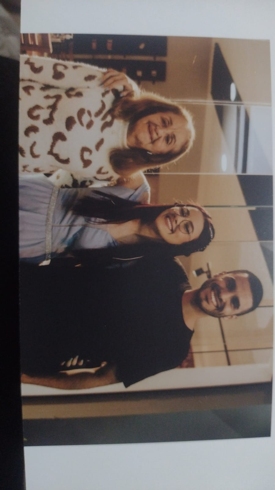

Familia

Irmãos
Parabéns Nathy
Felicidades, muitos anos de vida, saúde e paz.
Que esse novo ciclo seja repleto de alegrias e realizações positivas.
Você é uma pessoa muito especial pra mim.
Te amo irmã ❤️🥳
- Thiago
Feliz Aniversário, Nathy! Esta não é uma data qualquer, pois além de mais um ano de vida,
celebramos sua chegada à maioridade o então esperados 18 anos. Novas oportunidades e experiências
aguardam você e a Larissa lhe desejamos que aproveite tudo o que a vida lhe oferecer, sem que
nunca esqueça quem é ou quais são seus sonhos. Muitas felicidades, muitos anos de vida e que
hoje o seu dia seja repleto de bênçãos e alegria, parabéns agora você é de maior.Te amo seu
- Gabriel e Larissa